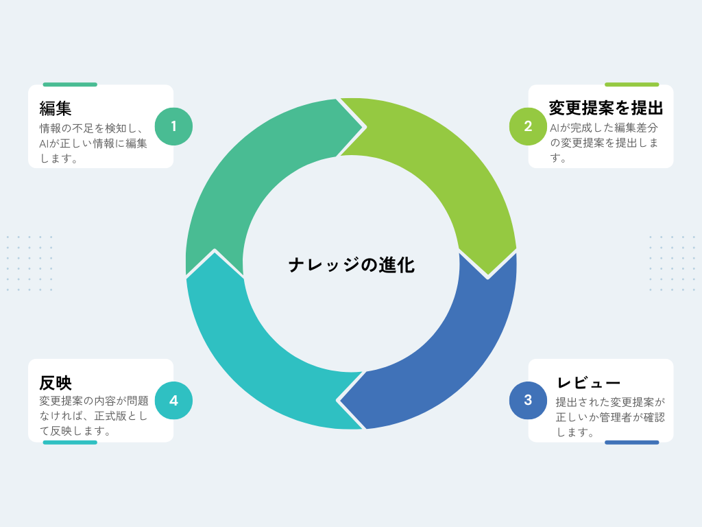
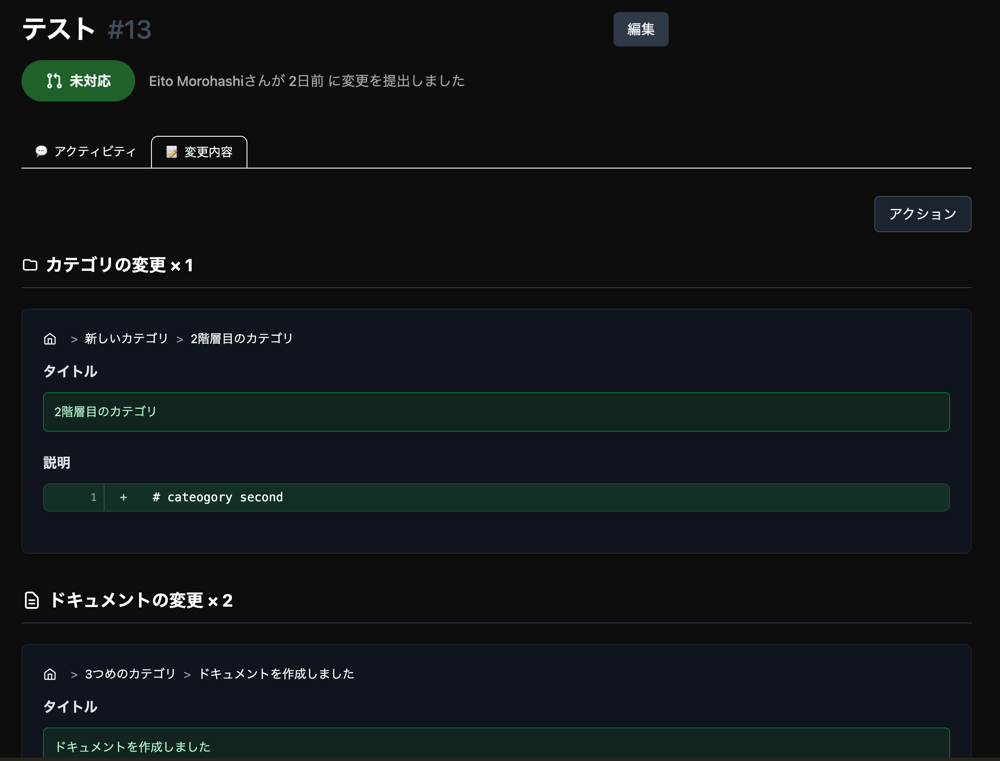

SOLUTIONS
Lexisが提供するソリューション
AIネイティブな組織のために設計された、次世代のナレッジ基盤
☍ Branch
安全に編集できる
独立した作業環境
Gitのブランチと同様に、正式なドキュメント(main)を汚さず、独立した環境で安全に編集できます。AIにも隔離された環境を提供することで、自律的なドキュメント生成を可能にします。
- mainブランチで正式版(SSOT)を保持
- AI・人間それぞれに独立した編集環境
- 3-way mergeによるコンフリクト解消

↷ Pull Request
変更提案と
承認フローを標準装備
編集されたドキュメントはPull Requestとして提出され、人間 + AIが最終的にレビューする仕組みを標準装備。意思決定の履歴がすべて記録されます。
- 変更提案(PR)による承認フロー
- コミットで意思決定の背景を記録
- レビューコメントで議論を可視化

✎ Editor
誰もが使える
直感的なインターフェース
エンジニアはMarkdown、非エンジニアはブロックエディタで編集可能。Gitの知識がなくても、Notionのように直感的に操作できます。
- Notionライクなブロックエディタ
- ブロック単位のコンフリクト解消
- GitHub / GitLabと連携